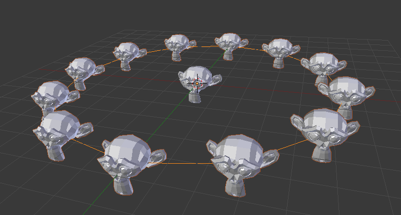
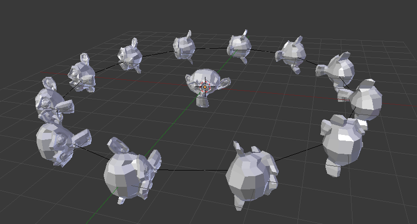

Дубль-Вершини -- DupliVerts¶
Орієнтир
| Mode: | Object Mode |
|---|---|
| Panel: |
Using Duplication Vertices (or DupliVerts) allows you to replicate child objects at the location of every vertex of the parent object.
Ghi chú
The relative Object Origin position of the parent and child objects determines offset duplicated geometry from parent vertex.
- Rotation
Rotates all duplicated objects according to the corresponding vertex normals of the parent mesh.
To change the axis of direction of the duplicated objects, select the child object and in the panel change the .
There are actually two approaches to modeling using DupliVerts. They can be used as an arranging tool, allowing to model geometrical arrangements of objects (e.g. the columns of a Greek temple, the trees in a garden, an army of robot soldiers, the desks in a classroom). The object can be of any object type which Blender supports. The second approach is to use them to model an object starting from a single part of it (e.g. the spikes in a club, the thorns of a sea-urchin, the tiles in a wall, the petals in a flower).
Ghi chú
Download Example Blend-File
Ви можете звантажити файл для прикладів, описаних на цій сторінці. У цьому файлі -- this blend, перший приклад -- це мавпа, приріднена до кола на шарі 1; тоді як щупальця, приріднені до ікосфери на шарі 2.
Дубль-Вершини як засіб впорядкування¶
Укладання¶
Все, що вам потрібно, -- це базовий об'єкт (наприклад, дерево або колона) та взірцева сіть з її вершинами по взірцю, який вам потрібний. У цьому розділі ми використаємо просту сцену. Ми скористаємося голову мавпи, розміщену у початку координатної системи в якості нашого базового об'єкта та коло у тій же локації в якості сіті-предка.

Голова мавпи та коло. |

Мавпи по дубль-вершинам. |
{kind=link}
First, in Object Mode, select the base object and Shift-RMB to add the circle to the selection (order is very important here), and Ctrl-P or to parent the base object to the circle. Now, the circle is the parent of the monkey; if you move the circle, the monkey will follow it.
Виділіть тільки коло та увімкніть у Редакторі Властивостей -- Properties кнопку «вкладка Об'єкт > Дублювання > Вершини» -- . Голова мавпи повинна поміститися у кожну вершину кола.
Оригінальна голова мавпи у центрі та сіть-предок все ще показуються у 3D Огляді -- 3D View, але ніколи не будуть зображуватися, рендеритися. Якщо розміщення та обертання голови вашої мавпи є дивним, то вам можливо необхідно зчистити її обертання Alt-R, масштабування Alt-S, локацію Alt-G та початок Alt-O.
Перевпорядкування¶
Якщо ви тепер виділите базовий об'єкт та модифікуєте його у режимі Об'єкта або Правки, то усі зміни також будуть відображатися на формі усіх дубльованих об'єктів. Ви можете також виділити сіть-предок для модифікації впорядкування дублікатів; додання вершин також додасть більше примірників.
Зауважте, що примірники будуть успадковувати зміни, зроблені на предківській сіті у Режимі Об'єкта -- Object Mode, але не у Режимі Правки -- Edit Mode. Тому, збільшення масштабу кола у Режимі Об'єкта буде збільшувати розмір голови мавпи, тоді як збільшення масштабу у Режимі Правки буде збільшувати тільки відстань між примірниками.
Орієнтація¶
Орієнтація примірників може визначатися вмиканням опції «Обертання» -- Rotation на панелі «Дублювання» -- Duplication. Це буде обертати усі примірники відповідно до нормалей вершин сіті-предка.
Для зміни орієнтації дубльованих об'єктів виділіть базовий об'єкт та на панелі «Об'єкт > Відношення Додатково» -- змініть устави секції «Осі Простеження» -- .

Від'ємно Y. |
|

Додатно X. |

Додатно Z, уверх X. |
{kind=link}
{kind=link}
Ghi chú
The axes of an object can be made visible in the panel. To display the vertex normals of the parent mesh, enter Edit Mode and enable this visualization in the panel where you can also resize the displayed normals as necessary.
Дубль-Вершини як засіб моделювання¶
Very interesting models can be made using DupliVerts and a standard primitive. In this example, a simple tentacle was made by extruding a cube a couple of times. The tentacle object was then parented to an icosphere. With dupli Rotation enabled for the parent mesh (the icosphere), the orientation of the base object (the tentacle) was adapted to the vertex normals of the parent mesh (in this case the tentacle was rotated -90° about the X axis in edit mode).

Просте щупальце, установлення для згладження. |

Дубльовані по вершинах примірники щупальця на предківській сіті. |

Увімкнено опцію «Обертання» на вирівняння дублікатів відносно сіті-предка. |
Як і у попередньому прикладі, форма та пропорції впорядкування можуть тепер бути кориговані.
To turn all duplicates into real objects, simply select the icosphere and , Shift-Ctrl-A. To make the icosphere and the tentacle a single object, make sure they are all selected and go to , Ctrl-J.
Xem thêm
Інші методи дублювання розглядаються тут -- here.